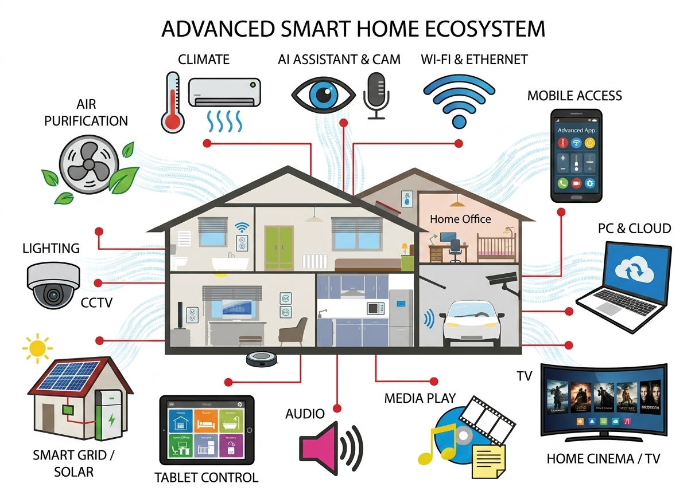
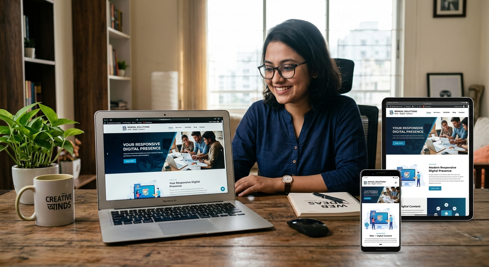
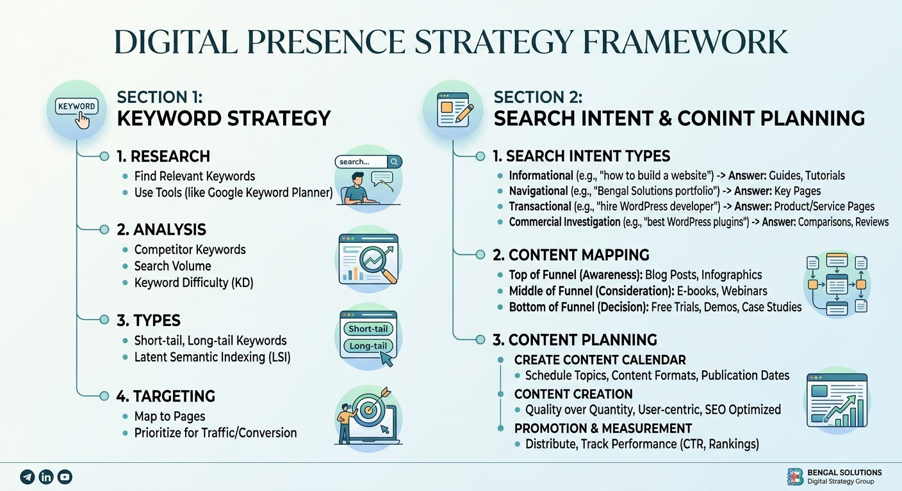

Arduino & Electronics
Microcontrollers, sensors, circuits and practical DIY electronics.
CREATIVE TECHNOLOGY • DIGITAL SOLUTIONS
I work across WordPress, SEO, automation and electronics—combining creativity with practical technology to build useful solutions.
Web • Automation • Electronics • SEO
I’m a technology-focused creator interested in turning ideas into real-world digital and electronic solutions. My work ranges from building WordPress websites and researching keywords to creating Arduino projects and home automation systems.
I care about clean execution, useful design and learning how things work from the ground up.
Microcontrollers, sensors, circuits and practical DIY electronics.
Modern websites, customization, content structure and basic maintenance.
Smart control concepts, sensors, automation logic and connected devices.
On-page optimization, content structure and search-focused improvements.
Finding relevant search opportunities and organizing keywords by intent.
Accurate data handling, web research, formatting and organized records.
Clean, responsive and easy-to-manage websites.
Research-driven optimization for better search visibility.
Arduino-based prototypes and smart-home concepts.
Accurate data entry and structured online research.

01 / AUTOMATIONArduino-based automation concept

02 / WEBResponsive digital presence

03 / SEOSearch intent & content planning
05 — CONTACT
Available for freelance projects, websites, SEO research, automation and digital support.
iamolimahmud@gmail.com ↗